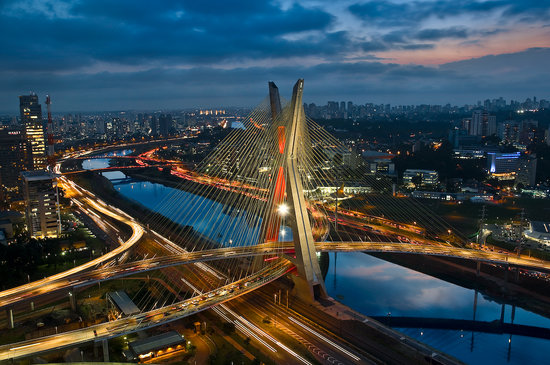
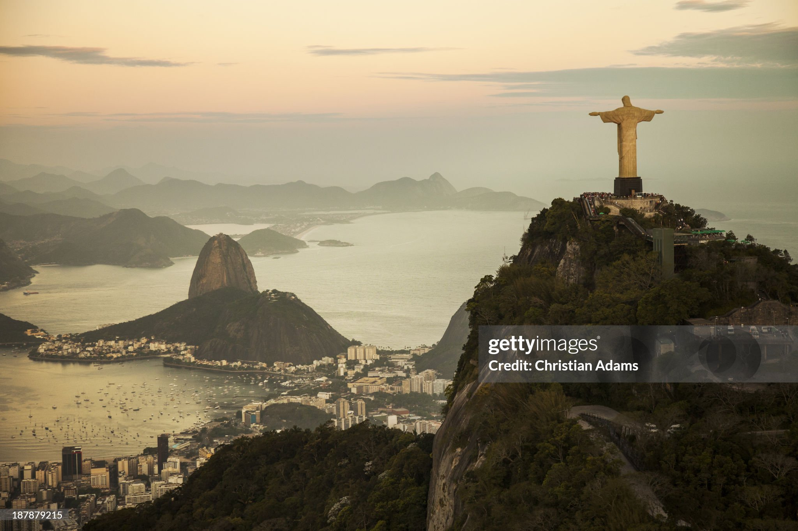
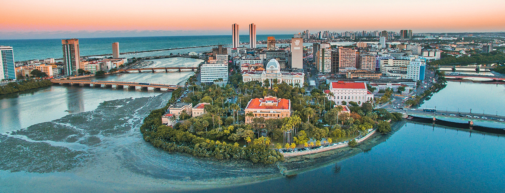
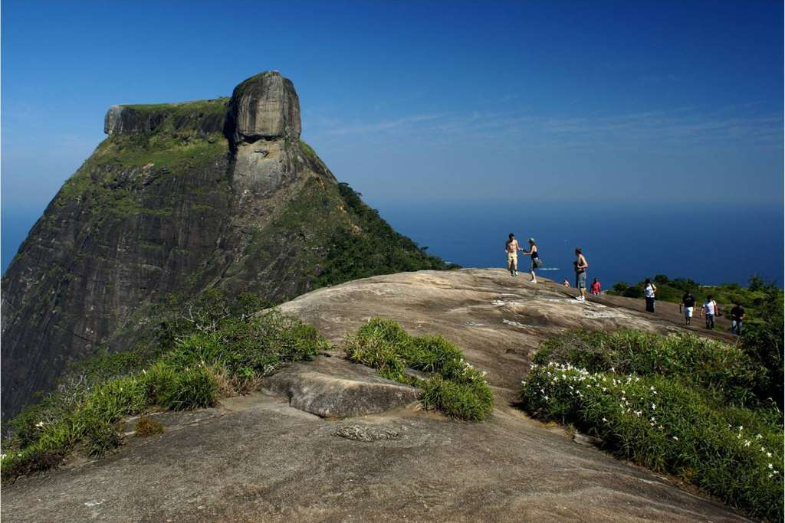
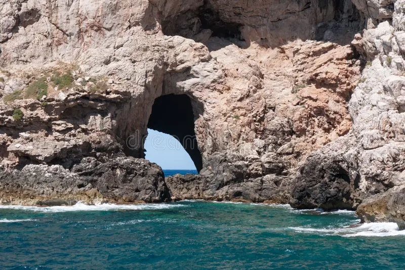
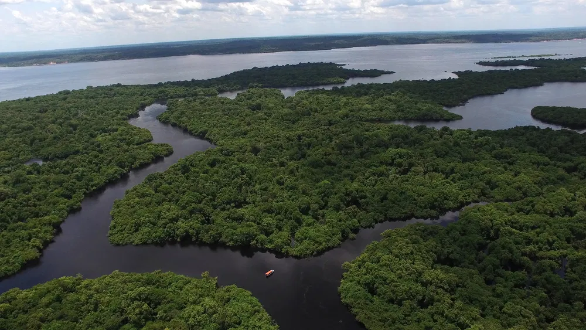

SÃO PAULO
Ponte Octávio Frias de Oliveira é uma ponte estaiada localizada na cidade de São Paulo, estado de São Paulo, Brasil. Foi inaugurada em 10 de maio de 2008, após três anos de construção,e hoje é um dos mais famosos cartões postais da cidade.
RIO DE JAMEIRO
Você começa sua jornada no Rio de Janeiro, subindo cristo redentor.
PERNAMBUCO
Em Pernambuco, você visita a histórica cidade de Olinda. Na carta, uma das pistas indica que para localizar a entrada para a cidade perdida você deve procurar a próxima pista em um dos pontos turísticos da cidade. Por qual você começa?
PICO DA TIJUCA
No topo do Pico da Tijuca, você encontra uma vista incrivel.
"O caminho de volta pra casa, depois de um longo dia e em um lugar remoto, se torna pequeno e breve pela existência de pessoas importantes à sua espera."
IGREJA DE OLINDA

Nas igrejas de Olinda, você descobre um mapa antigo escondido atrás de um altar, apontando que a próxima pista está no Amazonas.
PRAIA EM RECIFE
Explorando as praias, você encontra uma caverna escondida, mas ela leva a um beco sem saída.
RIO AMAZONAS E SUAS VERTENTES
No Amazonas, a busca pela cidade perdida se intensifica. Você se depara com um rio bifurcado.
IGREJA DE OLINDA
De volta às igrejas, você finalmente encontra o mapa antigo. Agora, para o Amazonas!
CACHOEIRA DO AMAZONAS
O rio à esquerda leva você a uma cachoeira escondida com inscrições antigas que revelam a entrada da cidade perdida.

O rio à direita termina em uma área pantanosa. Apesar de belas vistas, não há sinais da cidade perdida aqui.
RATANABA

O império amazônico, e que também ficou conhecida como Ratanabá, uma cidade perdida e agora encontrada, berço de toda a civilização. localizada sob a Serra do Roncador. Alguns historiadores chamavam o local de Cidade de Z, um local conhecido como Eldorado, uma cidade existente no coração da floresta amazônica, habitada pelos Índios Manoa.
CACHOEIRA DO AMAZONAS
Retornando e escolhendo o rio à esquerda, você finalmente encontra a cachoeira escondida e as inscrições que levam à cidade perdida.